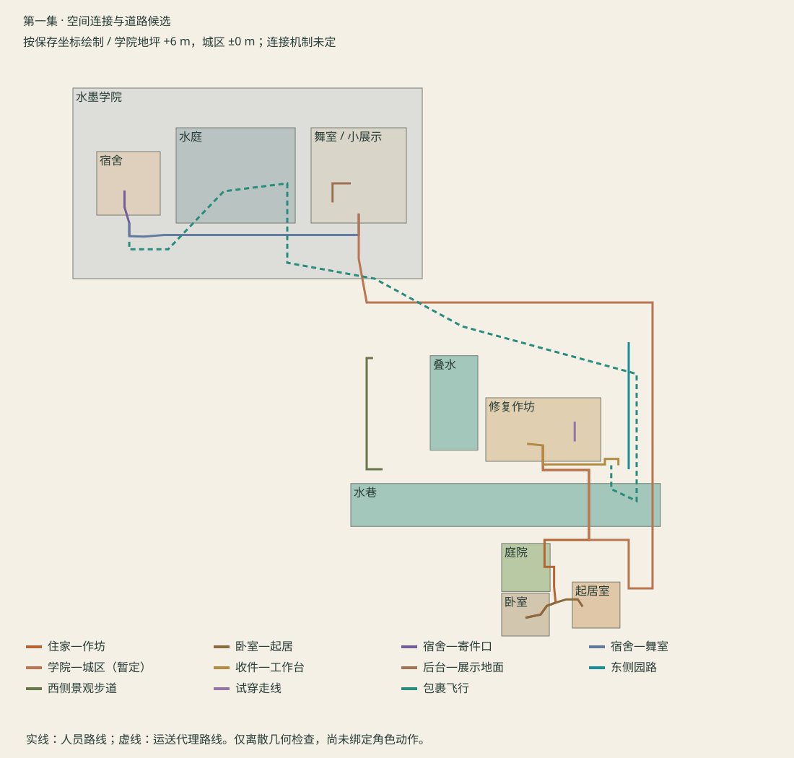

沿用卧室母版；扩展起居室、分岸作坊、试穿区、收件口、书院宿舍、水庭、舞室和沿途道路。学院外部保持水墨色；宿舍私人空间保留暖色。学校与城区的坡道、展示场地复用、全部新尺寸仍是空间候选，非作者采用决定。
连接关系

实际保存机位
E01-OV · 第一集局部总览
42 mm · A-G

E01-HOME · 半园两岸与桥
35 mm · C/F/G

E01-LIVING · 起居通话
25 mm · B-G01

E01-WORK · 作坊入口看室内
23 mm · D/E/F

E01-REVERSE · 作坊望住家
30 mm · C/D/G

E01-TRIAL · 干燥试穿区
28 mm · F

E01-DOCK · 作坊收件接口
30 mm · C-G06

E01-SCHOOL · 宿舍水庭与练功厅
28 mm · C-G02/G03

E01-DORM · 宿舍桌边
25 mm · B-G02/G05

E01-SEND · 宿舍寄件口
28 mm · B-G06/C-G01

E01-DANCE · 舞室日常母版方向
24 mm · G-G02

E01-STAGE · 小型展示与观众
24 mm · G-G03

E01-ROAD · 书院出入口与缓坡
30 mm · C/G-G01

E01-CASCADE · 叠水与沿途园城
28 mm · C-G04

E01-NIGHT · 归家两岸灯光
28 mm · G-G05
通路检查
采样间距不超过 0.20 m；人员半径 0.25 m，三档高度射线及脚下支撑；飞行使用代理外廓偏移射线。结果仅支持这组离散路线，不代表最终角色碰撞或游戏导航验收。
| 路线 | 采样点 | 障碍命中 | 地面缺口 |
|---|
| 住家—作坊 | 200 | 0 | 0 |
| 卧室—起居 | 50 | 0 | 0 |
| 宿舍—寄件口 | 33 | 0 | 0 |
| 宿舍—舞室 | 176 | 0 | 0 |
| 学院—城区（暂定） | 603 | 0 | 0 |
| 收件—工作台 | 86 | 0 | 0 |
| 后台—展示地面 | 27 | 0 | 0 |
| 东侧园路 | 81 | 0 | 0 |
| 西侧景观步道 | 87 | 0 | 0 |
| 试穿走线 | 14 | 0 | 0 |
| 包裹飞行 | 544 | 0 | 0 |
原卧室文件哈希已核对；旧素材与旧图册保留。代理造型、流体、角色表演与全息换景未完成。